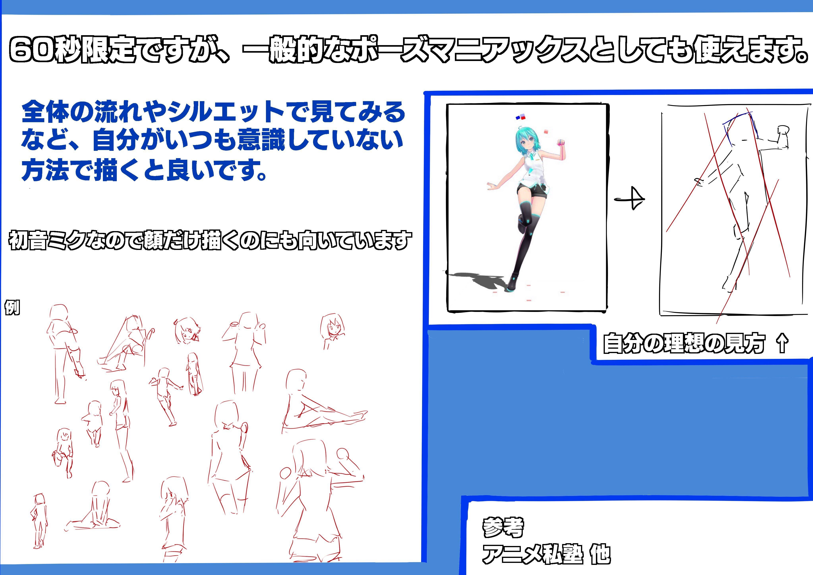

Document
ポーズマニアックス For MMD
ポーズマニアックス For MMDは60秒ドローイング専門の
イラスト練習支援サイトです。
使い方

今すぐ60秒ドローイングを始める
・紙と筆記用具を用意します。
・スタートボタンを押すと、1分間隔でポーズを取った初音ミクが表示されます。
・ツインテールではなくショートのモデルを使っているので、汎用性のある髪シルエットを覚えられます
・初音ミクを眺めたりする用途にも向いています。
・逆さになったポーズがあるのは仕様です。
・カウントダウン表示はありません。
・終わりたい場合はタブを消すか前のページに戻ってください。